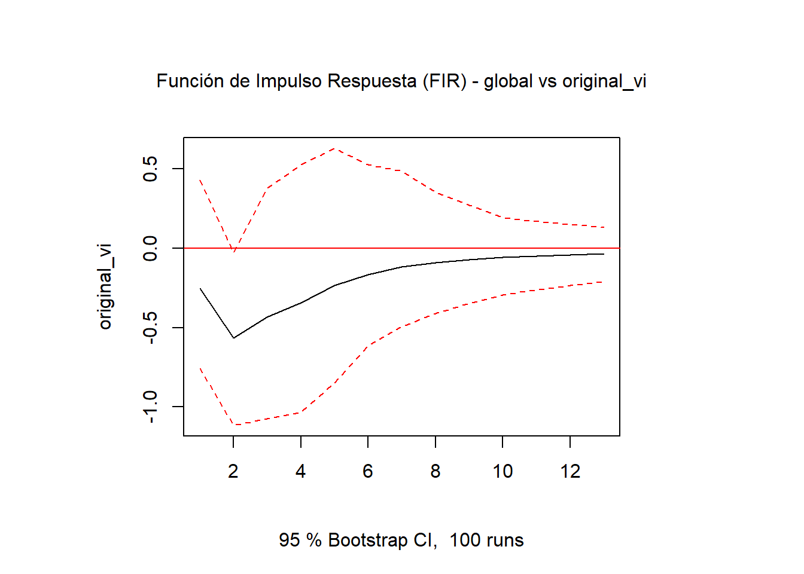
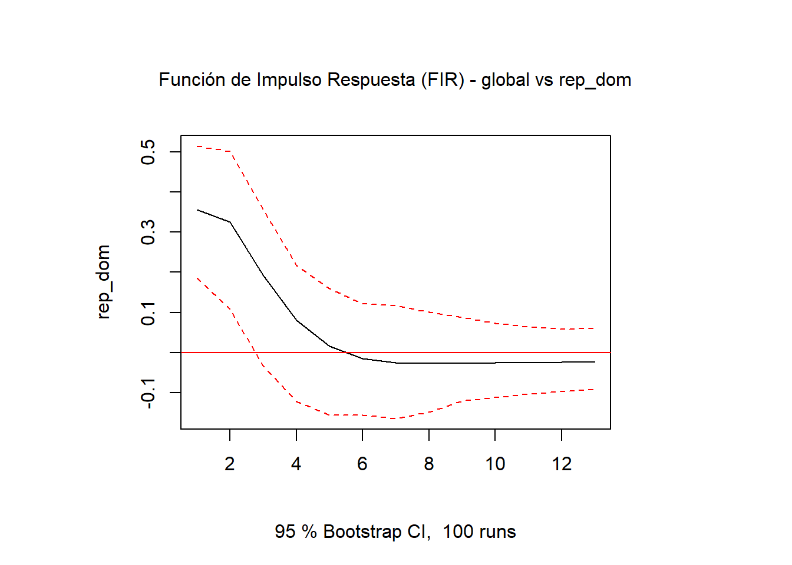

La función de impulso respuesta (FIR) es una herramienta fundamental en el análisis de series temporales, especialmente en econometría. Permite evaluar cómo un choque o perturbación en una variable afecta a otras variables a lo largo del tiempo. En este artículo, exploraremos cómo implementar la FIR utilizando R y el paquete vars.
Las series temporales son datos que se recogen a lo largo del tiempo, y la FIR nos ayuda a entender las dinámicas entre estas variables. Por ejemplo, si queremos analizar cómo un aumento en la tasa de interés afecta al PIB, la FIR nos permite observar el efecto a corto y largo plazo de este choque.
Según Mill (2019) las series de tiempo muestran patrones y tendencias que pueden ser influenciados por diversos factores, y la FIR es una herramienta clave para descomponer estos efectos.
Series de tiempo
Se suele entender como una suma de componentes, que pueden ser:
Tendencia: Componente de largo plazo que muestra la dirección general de la serie.
Estacionalidad: Componente que refleja patrones recurrentes en intervalos regulares, como las estaciones del año.
Ciclo: Componente que muestra fluctuaciones a largo plazo, como ciclos económicos.
Ruido: Componente aleatorio que no sigue un patrón discernible.
Formula:
\[
Y_t = T_t + S_t + C_t + R_t
\]
Función de Impulso Respuesta (FIR)
La FIR es una técnica que permite analizar cómo un choque en una variable afecta a otras variables a lo largo del tiempo. En términos simples, nos ayuda a responder preguntas como: “¿Cómo afectará un aumento en la tasa de interés al PIB en los próximos meses?”
Formula:
\[
IRF(h) = \frac{\partial Y_{t+h}}{\partial \epsilon_t}=\theta^h
\] donde (IRF(h)) es la función de impulso respuesta en el horizonte (h), (\(Y_{t+h}\)) es la variable dependiente en el tiempo (t+h), y (\(\epsilon_t\)) es el choque en el tiempo (t). La FIR nos permite observar cómo se propaga este choque a lo largo del tiempo.
Preparación de los datos
En este ejercicio, utilizaremos datos del EMBI (Emerging Markets Bond Index), especialmente el Global, y el IMAE (Índice Mensual de Actividad Económica) para ilustrar cómo aplicar la FIR en R. El EMBI es un índice que mide el rendimiento de los bonos emitidos por países emergentes, y es una variable clave en el análisis económico.
Con el paquete databcrd, podemos descargar los datos necesarios para nuestro análisis. A continuación, se muestra cómo obtener los datos del EMBI y el IMAE, y cómo prepararlos para el análisis.
La aplicación de la FIR en R se realiza utilizando el paquete vars, que proporciona herramientas para trabajar con modelos VAR (Vector Autoregression). En este caso, utilizaremos un modelo VAR para analizar el impacto del EMBI global en el IMAE.
Con la función VAR, podemos ajustar un modelo VAR a nuestros datos, especificando el número de rezagos (en este caso, 2) y el tipo de constante. Luego, utilizamos la función irf para calcular la función de impulso respuesta.
En la función irf, especificamos el impulso (en este caso, el EMBI global) y la respuesta (el IMAE). También podemos establecer el número de pasos hacia adelante (n.ahead) y habilitar el bootstrapping para obtener intervalos de confianza.
Show the code
library(vars)apli_ifr <-function( datos,impulse ="global",response ="original_vi",p =2,ahead =12 ) {# Ajustar el modelo VAR modelo <- vars::VAR(datos[c(impulse, response)], p = p, type ="const")# Calcular la función de impulso respuesta irf_result <- vars::irf( modelo, impulse = impulse, response = response, n.ahead = ahead, boot =TRUE )# Graficar el resultadoplot(irf_result, main =paste("Función de Impulso Respuesta (FIR) -", impulse, "vs", response))}apli_ifr(datos, impulse ="global", response ="original_vi", p =2, ahead =12)

Este gráfico muestra cómo un choque en el EMBI Global (indicador de riesgo país) impacta la actividad económica en República Dominicana, medida a través del IMAE interanual.
¿Qué observamos?
Un aumento inesperado en el EMBI (es decir, un aumento en el riesgo percibido) genera un efecto negativo inmediato sobre el IMAE. En el primer período, el impacto es claramente negativo y estadísticamente significativo, como indica la banda de confianza (líneas rojas punteadas) que no incluye el cero.
A partir del segundo período, el efecto comienza a desvanecerse progresivamente y converge hacia cero. Esto sugiere que la economía tiende a absorber el choque, y que el impacto no es permanente, sino transitorio.
Implicación económica:
Un aumento en el riesgo país deteriora la actividad económica en el corto plazo, pero si no se mantiene, la economía se ajusta y retoma su trayectoria previa. Esto refleja una respuesta temporal, típica en economías abiertas con acceso a financiamiento externo.
Estimación basada en 100 simulaciones bootstrap con intervalo de confianza al 95 %.
Show the code
apli_ifr(datos, impulse ="global", response ="rep_dom", p =2, ahead =12)

Este análisis evalúa la transmisión de shocks externos en el riesgo global hacia el riesgo soberano de República Dominicana, utilizando un modelo VAR con 12 períodos de horizonte.
¿Qué muestra el gráfico?
Un choque positivo en el EMBI Global (aumento en el riesgo internacional) provoca un aumento inmediato y significativo en el EMBI local.
Este impacto es positivo y significativo en los primeros 3-4 períodos, lo cual sugiere que el riesgo país local reacciona rápidamente ante tensiones financieras externas.
A medida que avanza el horizonte, el efecto tiende a disminuir gradualmente, indicando un proceso de ajuste parcial, aunque todavía dentro de bandas de confianza relativamente amplias.
Interpretación económica: Un aumento en el riesgo financiero global se transmite rápidamente a economías emergentes como República Dominicana, reflejando su vulnerabilidad a condiciones externas. Sin embargo, el efecto no es permanente y tiende a moderarse con el tiempo.